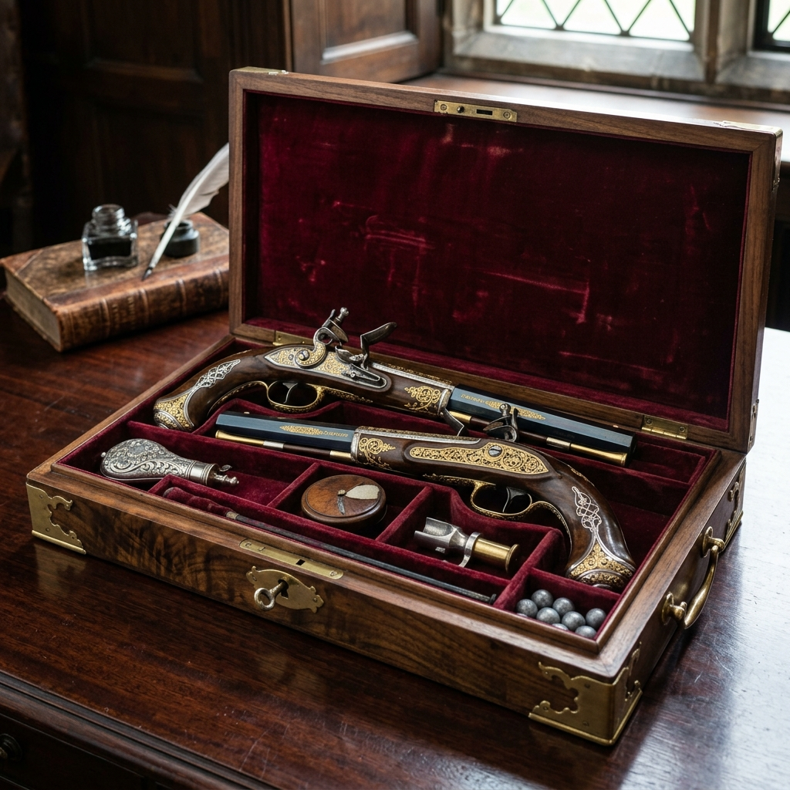
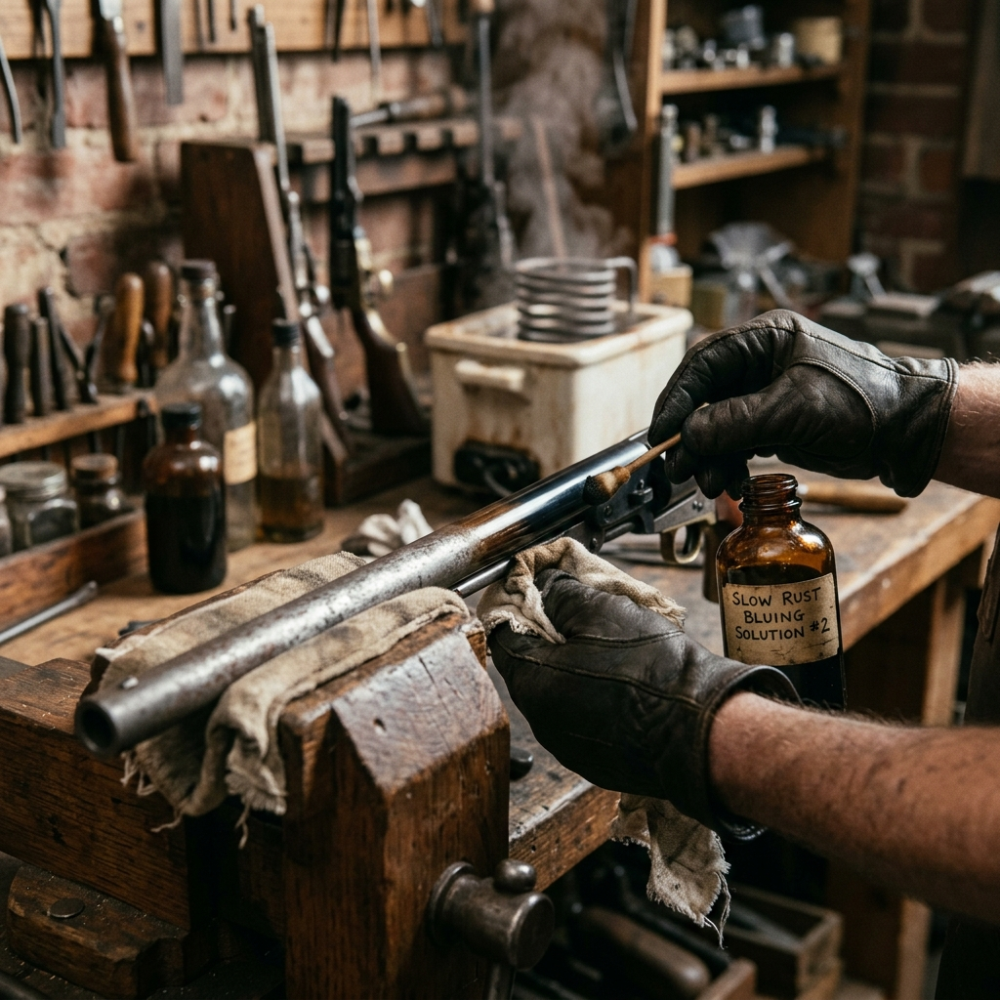

Section 1: The Attic Discovery
It began with a frantic call from a small estate in rural Virginia. Hidden behind a false panel in a 200-year-old mahogany desk lay a pair of silver-mounted flintlock pistols. Upon initial inspection, the craftsmanship pointed toward the work of Nicolas-Noël Boutet, the master gunsmith for Napoleon Bonaparte himself.
Further research into the serial numbers and the unique engraving of the "Marquis" crest suggested these were part of the legendary lost collection presented to General Lafayette during his final tour of America.
Section 2: Forensic Technical Analysis
"The steel used in Boutet's barrels was legendary for its purity, a result of meticulous browning processes that have largely been forgotten."
Our metallurgical analysis revealed a high carbon content in the frizzen, designed to create maximum sparks with minimal wear. The internal mechanism, though seized by 150 years of oxidized oil, remained structurally perfect. The intricate gold wire inlays along the grip showed signs of typical 18th-century French artistry.
Section 3: The Multi-Stage Restoration
Restoring such an artifact required a non-invasive stabilization approach. Every step was documented and performed under high-power magnification.

Mechanism Clearing

Inlay Stabilization

Period Browning
Section 4: Preserving a Living Legacy
Today, the Lafayette Pistols stand as a testament to the enduring link between mechanical engineering and historical narrative. They are no longer just weapons; they are witnesses to the birth of a nation. By choosing to restore rather than replace, we ensure that the story of the Marquis de Lafayette remains tactile and accessible for generations to come.